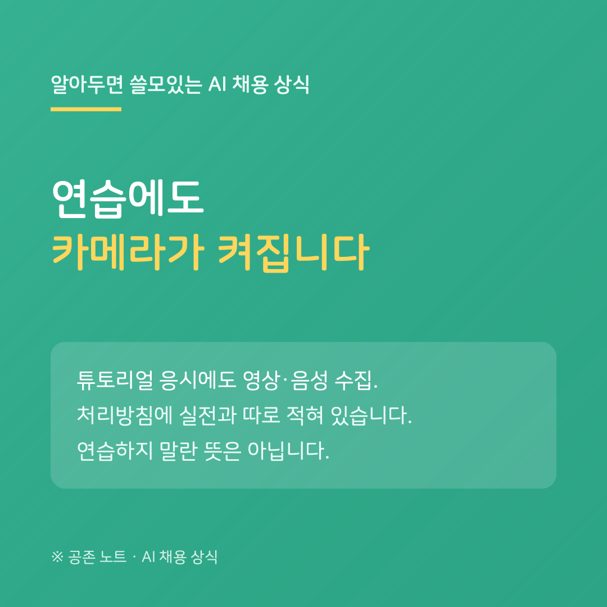

AI 역량검사는 미리 연습해 볼 수 있습니다. 잡다에는 공식 연습 페이지 「역량검사 수련하기」가 있고, 낯섦을 줄이는 데 실제로 도움이 됩니다. 그런데 처리방침을 읽다가 몰랐던 것을 하나 발견했습니다.
연습 응시에도 영상과 음성이 수집됩니다.
처리방침은 실전과 연습을 나눠 적어 두었습니다. 실전 응시에서는 이름, 응시코드, 동영상·음성 정보, 얼굴 등록용과 본인 확인용 사진, 응시 결과, 접속 기록을 받습니다. 연습에 해당하는 「튜토리얼 응시」에서는 시리얼 번호, 동영상·음성 정보, 접속 기록을 받습니다.
이름과 결과는 빠집니다. 하지만 카메라와 마이크는 연습에서도 켜집니다. 접속 기록도 양쪽 모두에 적혀 있습니다. 아이피 주소, 접속 시간, 기기 정보입니다. 같은 방침에 「기출 면접 연습」도 동영상·음성을 받는다고 적혀 있으니, 연습이라는 이름이 붙었다고 카메라가 꺼지는 건 아닙니다.
연습하지 말라는 뜻이 아닙니다. 낯선 화면에 당황하지 않는 편이 낫다는 건 그대로입니다. 다만 연습을 아무것도 남지 않는 예행으로 생각했다면, 그건 사실과 다릅니다. 처리방침은 실전과 연습을 따로 적을 만큼 둘을 구분하고 있고, 그 구분이 '연습은 수집하지 않는다'는 뜻은 아니었습니다.
알고 하는 것과 모르고 하는 것은 다릅니다. 연습 전에 주변을 한 번 정리하는 것으로 충분합니다.
---
※ 잡다(JOBDA) 개인정보 처리방침 및 「역량검사 수련하기」 페이지, 2026년 8월 18일 확인. 솔루션마다 기준이 다를 수 있습니다.
공존 노트 · AI가 당신을 평가하는 시대, 구직자를 위한 안내서